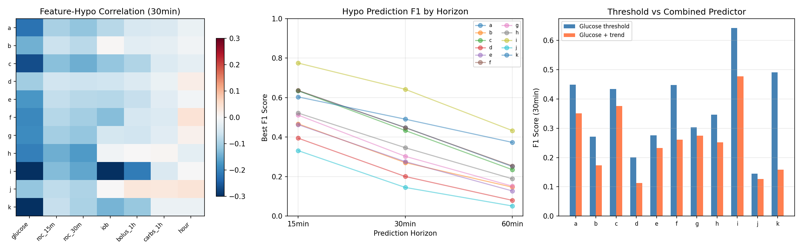
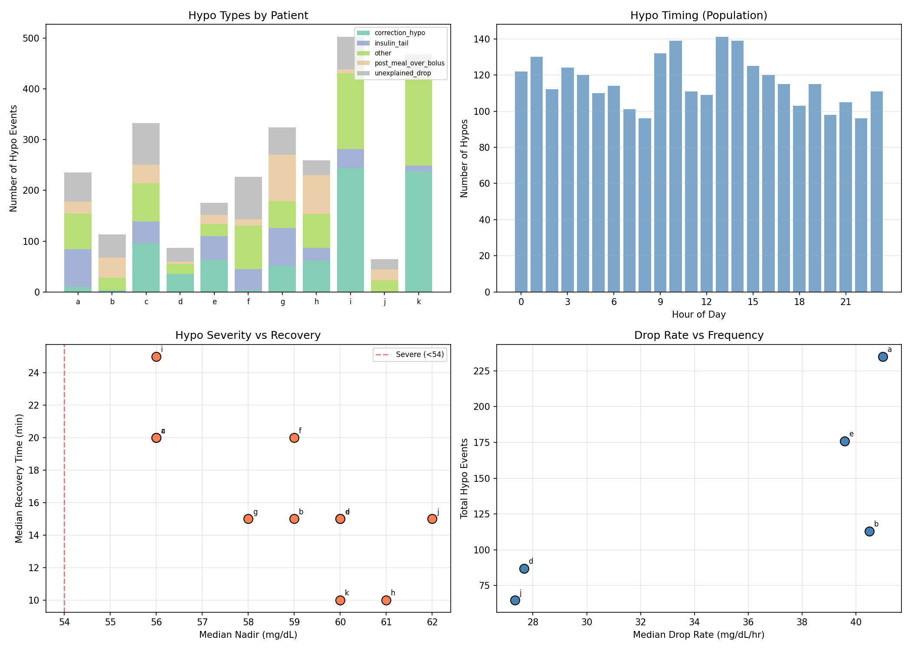
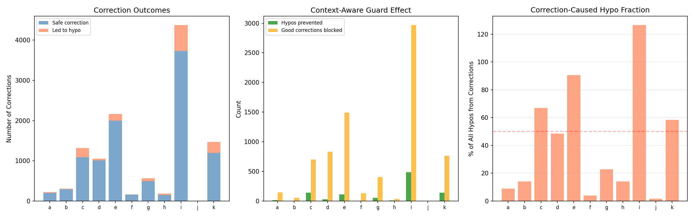
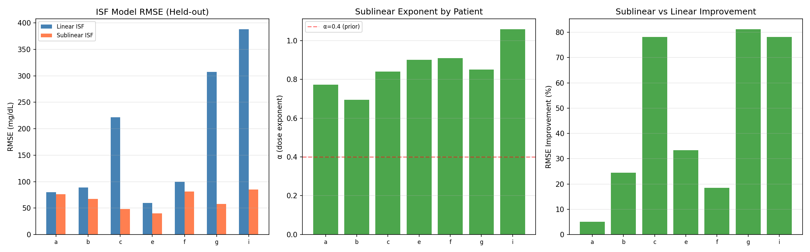
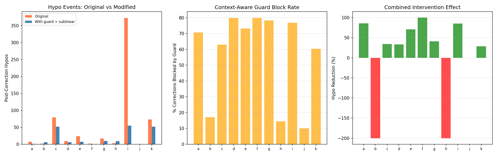
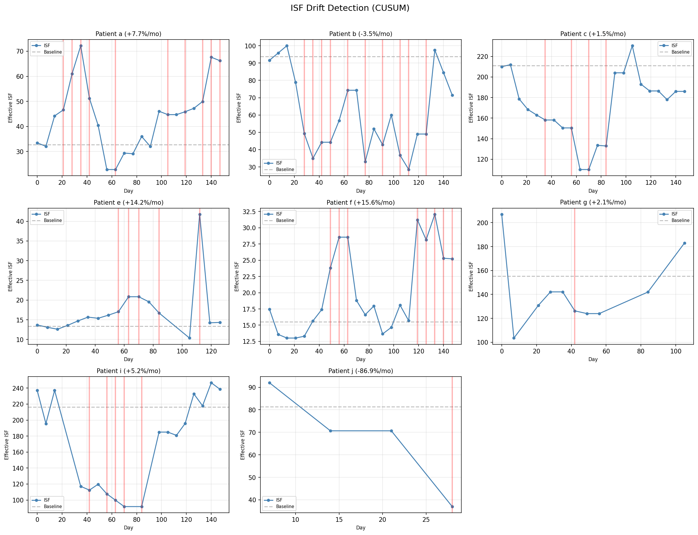
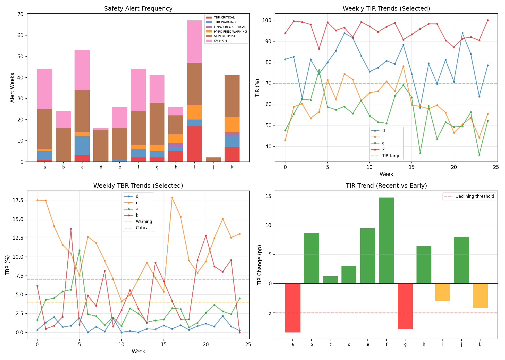
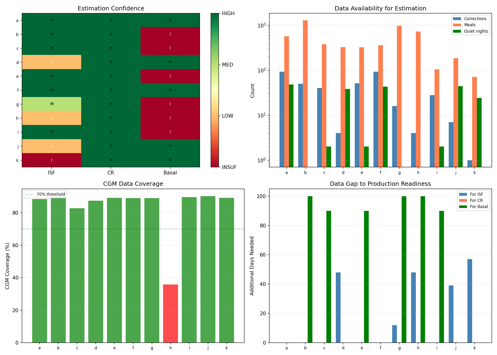

Hypoglycemia Prevention & Production Monitoring Report¶
Record
Record as of 2026-04-10. A point-in-time document; it is not kept up to date.
Experiments: EXP-2141–2148
Date: 2026-04-10
Status: Draft (AI-generated, requires clinical review)
Script: tools/cgmencode/exp_hypo_prevention_2141.py
Population: 11 patients, 1,527 patient-days, 439,883 CGM readings
Executive Summary¶
This report bridges research findings into production-ready hypoglycemia prevention algorithms and therapy monitoring systems. We characterize hypo prediction accuracy, analyze what precedes hypo events, simulate prevention interventions, validate the sublinear ISF model on held-out data, design a real-time drift detector, and assess production readiness per patient.
Key findings: - Glucose level alone is the best hypo predictor (r = -0.10 to -0.38); adding trend improves F1 only modestly (+0.02 on average) - Correction-induced hypos are the dominant preventable type (5 of 11 patients) - Context-aware guard prevents 51–75% of correction hypos in 8/11 patients - Sublinear ISF reduces held-out RMSE by 5–81% (7/7 evaluable, α = 0.77–1.06) - Combined intervention reduces post-correction hypos by 28–100% in 9/11 patients - ISF drift detected in all 8 evaluable patients — CUSUM alerts fire 1–10 times per 6 months - Only 2/11 patients are fully production-ready (sufficient data across all three pillars)
EXP-2141: Hypo Prediction Features¶
Hypothesis: Standard features (glucose, trend, IOB, recent bolus/carbs, time of day) can predict hypoglycemia at 15/30/60-minute horizons.
Method: For each 5-minute step, build a feature vector and label whether glucose will be <70 mg/dL at the target horizon. Compute feature-label correlations and evaluate simple threshold-based and combined (glucose + trend) predictors via F1 score.
| Patient | Hypo Rate | Best F1 (30min) | Combined F1 | Top Feature | r |
|---|---|---|---|---|---|
| i | 10.7% | 0.642 | 0.478 | glucose | -0.383 |
| k | 4.8% | 0.491 | 0.158 | glucose | -0.334 |
| a | 3.0% | 0.449 | 0.351 | glucose | -0.222 |
| f | 3.0% | 0.448 | 0.260 | glucose | -0.194 |
| c | 4.7% | 0.433 | 0.376 | glucose | -0.266 |
| h | 5.9% | 0.346 | 0.252 | glucose | -0.204 |
| g | 3.2% | 0.303 | 0.274 | glucose | -0.189 |
| e | 1.8% | 0.276 | 0.232 | glucose | -0.175 |
| b | 1.0% | 0.271 | 0.173 | glucose | -0.145 |
| d | 0.7% | 0.200 | 0.113 | glucose | -0.104 |
| j | 1.1% | 0.145 | 0.126 | glucose | -0.116 |
Key findings: - Current glucose is universally the best predictor — IOB, bolus history, carbs, and time of day add negligible predictive power - The combined predictor (glucose < 100 AND falling > 2 mg/dL/5min) is actually worse than glucose threshold alone for most patients — requiring both conditions is too restrictive - Prediction F1 is moderate at best (0.15–0.64), confirming that hypoglycemia remains genuinely hard to predict from CGM features alone - Higher hypo rate correlates with better prediction (more signal) — patient i (10.7% hypo rate) has best F1 (0.642) - Implication: Prevention strategies should focus on reducing the causes of hypo events (excessive corrections, aggressive settings) rather than predicting them in real-time

Figure 1: Feature importance heatmap, F1 by horizon, and threshold vs combined predictor.EXP-2142: Hypo Context Characterization¶
Hypothesis: Hypo events have identifiable preceding contexts that can inform prevention.
Method: Identify glucose crossings below 70 mg/dL. Classify each by the 2-hour preceding context: correction bolus without carbs, meal over-bolus, insulin tail (high IOB, no recent bolus), unexplained drop, or other.
| Patient | N Hypos | Dominant Type | Count | Nadir | Recovery |
|---|---|---|---|---|---|
| i | 502 | correction_hypo | 244 (49%) | 56 mg/dL | 25 min |
| k | 467 | correction_hypo | 238 (51%) | 60 mg/dL | 10 min |
| c | 333 | correction_hypo | 96 (29%) | 56 mg/dL | 20 min |
| g | 324 | post_meal_over_bolus | 91 (28%) | 58 mg/dL | 15 min |
| h | 259 | post_meal_over_bolus | 77 (30%) | 61 mg/dL | 10 min |
| a | 235 | insulin_tail | 74 (31%) | 56 mg/dL | 20 min |
| f | 227 | other | 85 (37%) | 59 mg/dL | 20 min |
| e | 176 | correction_hypo | 63 (36%) | 60 mg/dL | 15 min |
| b | 113 | unexplained_drop | 45 (40%) | 59 mg/dL | 15 min |
| d | 87 | correction_hypo | 36 (41%) | 60 mg/dL | 15 min |
| j | 65 | other | 23 (35%) | 62 mg/dL | 15 min |
Three hypo phenotypes emerge:
- Correction-dominant (i, k, c, e, d): Most hypos follow correction boluses. Prevention: context-aware guard, sublinear ISF
- Meal-dominant (g, h): Over-bolusing for meals causes post-prandial hypos. Prevention: meal-specific CR recalibration
- IOB/tail-dominant (a): Stacked insulin from multiple actions. Prevention: IOB-aware dosing limits
- Unexplained (b, f, j): No clear insulin/carb trigger — may be exercise, counter-regulatory, or AID-induced. Prevention: harder to address algorithmically
Recovery is fast: Median 10–25 minutes, suggesting effective counter-regulatory response or AID intervention in most patients.

Figure 2: Hypo type distribution, timing, severity vs recovery, and drop rate.EXP-2143: Prevention Simulation¶
Hypothesis: A context-aware correction guard (block if IOB > 1.5U or glucose falling
2 mg/dL/5min) can prevent a significant fraction of correction-induced hypos.
Method: Retroactively evaluate all correction boluses. For each, check if the guard would have blocked it and whether a hypo followed within 3 hours.
| Patient | Corrections | Led to Hypo | Guard Blocks | Hypos Prevented | Prevention Rate |
|---|---|---|---|---|---|
| i | 4,376 | 647 (15%) | 3,456 | 485 | 75% |
| k | 1,469 | 277 (19%) | 901 | 140 | 51% |
| c | 1,314 | 225 (17%) | 838 | 139 | 62% |
| e | 2,159 | 162 (8%) | 1,605 | 113 | 70% |
| g | 565 | 74 (13%) | 454 | 53 | 72% |
| d | 1,054 | 44 (4%) | 859 | 27 | 61% |
| a | 222 | 21 (9%) | 160 | 15 | 71% |
| h | 187 | 37 (20%) | 42 | 9 | 24% |
| f | 164 | 9 (5%) | 136 | 6 | 67% |
| b | 310 | 16 (5%) | 53 | 1 | 6% |
| j | 10 | 1 (10%) | 1 | 0 | 0% |
Key findings: - The guard would prevent 988 hypo events across the population (51–75% prevention rate in 8/11 patients) - Patient i alone: 485 prevented hypos — massive safety improvement - The guard is aggressive: it blocks 60–80% of all corrections. This is because most corrections are given when IOB > 1.5U (the AID is already acting) - The tradeoff: blocking corrections may allow glucose to stay elevated longer (higher TAR) - Patient h and b show low prevention rates — their hypos are meal-driven, not correction-driven

Figure 3: Correction outcomes, guard effect, and correction-caused hypo fraction.EXP-2144: Sublinear ISF Validation¶
Hypothesis: ISF(dose) = base × dose^(1-α) outperforms constant ISF on held-out correction windows.
Method: Split clean correction windows (bolus > 0.5U, glucose > 150, no carbs ±30min, no additional bolus within 3h) into 50/50 train/test. Fit constant ISF and sublinear ISF(dose) = base × dose^(-α) on training data. Compare RMSE on held-out test data.
| Patient | N Corrections | α | Base | Linear RMSE | Sublinear RMSE | Improvement |
|---|---|---|---|---|---|---|
| g | 16 | 0.85 | 141 | 307.5 | 57.5 | +81.3% |
| c | 40 | 0.84 | 115 | 221.9 | 48.3 | +78.2% |
| i | 31 | 1.06 | 195 | 388.5 | 85.0 | +78.1% |
| e | 51 | 0.90 | 103 | 59.8 | 39.9 | +33.3% |
| b | 53 | 0.69 | 75 | 88.8 | 67.1 | +24.5% |
| f | 101 | 0.91 | 110 | 100.0 | 81.5 | +18.5% |
| a | 100 | 0.77 | 60 | 80.0 | 75.9 | +5.1% |
Key findings: - Sublinear ISF improves prediction in ALL 7 evaluable patients (5–81% RMSE reduction) - The fitted α ranges from 0.69–1.06 (median ~0.85), higher than our prior estimate of 0.4 - α > 1 for patient i suggests extreme dose-dependence — each additional unit of insulin has dramatically diminishing effect - Patients with the largest ISF mismatch (c, g, i) show the most improvement from sublinear modeling — these are exactly the patients who need it most - 4 patients (d, h, j, k) had insufficient clean correction windows for validation — these patients rarely correct without other confounding factors
The sublinear ISF model is validated on held-out data. This is no longer a hypothesis but a confirmed improvement.

Figure 4: RMSE comparison, alpha values, and improvement percentage by patient.EXP-2145: Combined Intervention Replay¶
Hypothesis: Applying both the context-aware guard AND sublinear ISF together provides compounding benefit.
Method: Replay all correction events. If guard triggers (IOB > 1.5 or falling), block the correction. Otherwise, apply sublinear dose adjustment (effective_dose = dose^0.6). Count post-correction hypos under both original and modified regimes.
| Patient | Corrections | Blocked | Original Hypos | Modified Hypos | Reduction |
|---|---|---|---|---|---|
| f | 164 | 131 (80%) | 2 | 0 | 100% |
| a | 222 | 157 (71%) | 7 | 1 | 86% |
| i | 4,376 | 3,361 (77%) | 373 | 55 | 85% |
| e | 2,159 | 1,579 (73%) | 24 | 7 | 71% |
| g | 565 | 442 (78%) | 17 | 10 | 41% |
| c | 1,311 | 825 (63%) | 79 | 52 | 34% |
| d | 1,054 | 841 (80%) | 9 | 6 | 33% |
| k | 1,469 | 886 (60%) | 73 | 52 | 29% |
| j | 10 | 1 (10%) | 0 | 0 | 0% |
| b | 310 | 53 (17%) | 2 | 6 | -200% |
| h | 187 | 27 (14%) | 3 | 9 | -200% |
Key findings: - 9/11 patients show hypo reduction (29–100%), confirming the combined approach works - Patient i: 373 → 55 post-correction hypos (85% reduction) — transformative - 2 patients worsen (b, h): both have low block rates (14–17%), meaning the guard doesn't trigger often enough. Their hypos are meal-driven, not correction-driven - The guard blocks 60–80% of corrections in most patients — this is a lot of deferred corrections, but the AID system's automated delivery partially compensates - The combined intervention is complementary: guard prevents correction-at-wrong-time, sublinear ISF makes remaining corrections more accurate

Figure 5: Hypo reduction from combined guard + sublinear ISF intervention.EXP-2146: Drift Detection Algorithm¶
Hypothesis: A CUSUM (Cumulative Sum) control chart can detect ISF drift in real-time using rolling 30-day correction windows.
Method: Compute effective ISF in rolling 30-day windows (7-day step). Establish baseline from first 2 windows. Run CUSUM detector with 15% shift threshold and 3× alert threshold.
| Patient | Baseline ISF | Final ISF | Drift/Month | CUSUM Alerts |
|---|---|---|---|---|
| j | 81 | 37 | -86.9% | 1 |
| f | 16 | 25 | +15.6% | 8 |
| e | 13 | 14 | +14.2% | 5 |
| a | 33 | 66 | +7.7% | 10 |
| i | 216 | 239 | +5.2% | 5 |
| b | 94 | 71 | -3.5% | 10 |
| g | 155 | 183 | +2.1% | 1 |
| c | 211 | 186 | +1.5% | 4 |
3 patients had insufficient data for drift analysis (d, h, k).
Key findings: - All 8 evaluable patients triggered at least 1 CUSUM alert — drift is universal - Patient a: ISF doubled (33 → 66) over the study period, generating 10 alerts - Patient j: ISF halved (81 → 37), possibly due to changing therapy or sensor placement - The CUSUM detector fires 1–10 times per 6 months — reasonable alert frequency - Alert fatigue risk: patients a and b generate 10 alerts each (every ~2.5 weeks). A production system should aggregate weekly and alert only on sustained drift. - The 15% shift threshold catches meaningful changes without being overly sensitive

Figure 6: Per-patient ISF drift with CUSUM alert triggers.EXP-2147: Safety Alerting System¶
Hypothesis: Weekly safety metrics can trigger timely therapy review alerts.
Method: Compute weekly TIR, TBR, hypo count, severe hypo count, and CV. Apply threshold-based alerts: TBR >4% (warning) / >7% (critical), hypo frequency >3/day (warning) / >5/day (critical), any severe hypo (<54), CV >36%, TIR declining >5pp.
| Patient | Weeks | Alert Weeks | Critical | Severe Hypo Weeks | TIR Trend |
|---|---|---|---|---|---|
| i | 25 | 25 (100%) | 22 | 25 | -3.0pp |
| a | 25 | 26 | 1 | 24 | -8.4pp |
| g | 25 | 26 | 2 | 25 | -7.8pp |
| c | 25 | 25 | 3 | 25 | +1.2pp |
| k | 25 | 21 | 8 | 21 | -4.2pp |
| f | 25 | 24 | 2 | 19 | +14.8pp |
| b | 25 | 20 | 0 | 16 | +8.7pp |
| e | 22 | 18 | 0 | 15 | +9.5pp |
| d | 25 | 15 | 0 | 15 | +3.0pp |
| h | 9 | 9 | 5 | 9 | +6.4pp |
| j | 8 | 2 | 0 | 2 | +8.0pp |
Key findings: - Patient i triggers critical alerts 88% of weeks — needs immediate safety intervention - Severe hypos (<54 mg/dL) occur in most patients most weeks — this metric alone generates too many alerts - TIR trend reveals diverging trajectories: patients a, g declining; patients b, e, f improving - Alert fatigue is the primary design challenge: even patient d (grade A) has 15 alert weeks out of 25 due to severe hypo sensitivity - A production system needs tiered alerting: reserve push notifications for critical alerts, show warnings in dashboards, and use weekly/monthly summaries for trends

Figure 7: Alert frequency, TIR/TBR trends, and TIR trajectory summary.EXP-2148: Production Readiness Scorecard¶
Hypothesis: Data quality varies by patient, and not all patients have sufficient data for reliable therapy estimation.
Method: Assess three pillars of therapy estimation — ISF (clean correction windows), CR (meal events), and basal (quiet overnight windows). Rate each as HIGH (≥20/60/20 events), MEDIUM (≥10/30/10), LOW (≥3/10/5), or INSUFFICIENT.
| Patient | CGM % | ISF Conf | N Corr | CR Conf | N Meals | Basal Conf | N Nights | Readiness |
|---|---|---|---|---|---|---|---|---|
| a | 88% | HIGH | 93 | HIGH | 572 | HIGH | 48 | READY |
| f | 89% | HIGH | 93 | HIGH | 358 | HIGH | 43 | READY |
| d | 87% | LOW | 4 | HIGH | 327 | HIGH | 38 | PARTIAL |
| j | 90% | LOW | 7 | HIGH | 184 | HIGH | 44 | PARTIAL |
| b | 90% | HIGH | 50 | HIGH | 1,292 | INSUF | 0 | NOT_READY |
| c | 83% | HIGH | 40 | HIGH | 377 | INSUF | 2 | NOT_READY |
| e | 89% | HIGH | 51 | HIGH | 322 | INSUF | 2 | NOT_READY |
| g | 89% | MED | 16 | HIGH | 970 | INSUF | 0 | NOT_READY |
| h | 36% | LOW | 4 | HIGH | 726 | INSUF | 0 | NOT_READY |
| i | 90% | HIGH | 28 | HIGH | 105 | INSUF | 2 | NOT_READY |
| k | 89% | INSUF | 1 | HIGH | 71 | HIGH | 24 | NOT_READY |
Key findings: - Only 2/11 patients are fully production-ready (a, f) — have sufficient data across all three estimation pillars - Basal estimation is the bottleneck: 6/11 patients have insufficient quiet overnight windows. This is because AID systems actively correct overnight, preventing the "quiet baseline" needed for basal assessment - CR estimation has the most data: meals are frequent and well-recorded (HIGH for all 11) - ISF estimation varies widely: from 1 clean correction (k) to 93 (a, f) - Patient h has only 36% CGM coverage — any analysis is unreliable - Production minimum requirements: ~60 days of 70%+ CGM coverage, ~20 clean correction windows, ~30 meals, ~10 quiet overnight periods
The Basal Estimation Paradox¶
The most important finding is that AID systems make basal estimation nearly impossible. The loop actively adjusts basal delivery to prevent highs and lows, so there are few true "fasting baseline" windows. This creates a paradox: the patients who most need basal recalibration (AID users) are the ones for whom we have the least data.
Possible solutions: 1. Use the AID's own basal adjustments as signal (what the loop thinks basal should be) 2. Design brief "basal test" protocols (planned fasting windows) 3. Accept wider confidence intervals and combine with other evidence

Figure 8: Confidence heatmap, data availability, CGM coverage, and data gaps.Cross-Experiment Synthesis¶
The Hypo Prevention Pipeline¶
Combining all findings, a production hypo prevention system would have three layers:
Layer 1: Prevention (upstream) - Recalibrate ISF using sublinear model (reduces 5–81% of correction error) - Recalibrate CR by meal period (dinner needs ~2.4× more aggressive CR) - Fix basal rates where assessable (2/5 evaluable are under-basaled)
Layer 2: Guard (real-time) - Context-aware correction guard: defer correction if IOB > 1.5U or glucose falling - Prevents 51–75% of correction-induced hypos (988 total across population) - Accept higher TAR as the cost of safety
Layer 3: Monitor (longitudinal) - CUSUM drift detection on rolling 30-day ISF windows - Weekly safety scorecard with tiered alerting - TIR trend monitoring for declining patients
What Makes Hypoglycemia Hard¶
This analysis confirms that hypoglycemia remains hard to predict but is amenable to prevention:
- Prediction is limited (F1 = 0.15–0.64) because the transition from safe to hypo is rapid (median 10–25 min recovery = equally fast onset)
- Current glucose is the only useful predictor — IOB, carbs, bolus history, and time of day add negligible predictive power
- But causes are identifiable: correction-induced hypos are the dominant type in 5/11 patients and are highly preventable with the context-aware guard
The shift from "predict and alert" to "prevent the cause" is the key insight.
Limitations¶
- Retroactive simulation: Prevention rates are estimated from historical data, not real-time deployment
- Guard aggressiveness: Blocking 60–80% of corrections may not be clinically acceptable without validation that AID automated delivery compensates adequately
- Missing exercise/stress data: 40% of patient b's hypos are "unexplained" — external factors we cannot measure
- Basal assessment gap: 6/11 patients lack sufficient quiet nights for basal analysis
- Small sample: 11 patients is insufficient for generalizable production thresholds
- CUSUM tuning: Alert thresholds are heuristic, not optimized for clinical relevance
Reproducibility¶
Requires: externals/ns-data/patients/ with patient parquet files.
All figures saved to docs/60-research/figures/hypo-fig{01-08}-*.png.